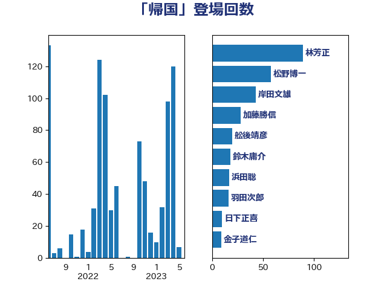

単語「帰国」

| 林芳正 | 自由民主党 | 89 回 |
| 松野博一 | 自由民主党 | 58 回 |
| 岸田文雄 | 自由民主党 | 43 回 |
| 加藤勝信 | 自由民主党 | 28 回 |
| 舩後靖彦 | れいわ新選組 | 20 回 |
| 鈴木庸介 | 立憲民主党 | 18 回 |
| 浜田聡 | NHK党 | 17 回 |
| 羽田次郎 | 立憲民主党 | 16 回 |
| 日下正喜 | 公明党 | 10 回 |
| 金子道仁 | 日本維新の会 | 9 回 |
| 笠井亮 | 日本共産党 | 9 回 |
| 滝波宏文 | 自由民主党 | 9 回 |
| 竹内真二 | 公明党 | 8 回 |
| 清水真人 | 自由民主党 | 8 回 |
| 細田健一 | 自由民主党 | 7 回 |
| 山田勝彦 | 立憲民主党 | 7 回 |
| 吉田はるみ | 立憲民主党 | 7 回 |
| 三木圭恵 | 日本維新の会 | 7 回 |
| 高良鉄美 | 無所属 | 6 回 |
| 茂木敏充 | 自由民主党 | 6 回 |
| 舟山康江 | 国民民主党 | 6 回 |
| 斎藤洋明 | 自由民主党 | 6 回 |
| 山田賢司 | 自由民主党 | 6 回 |
| 中川郁子 | 自由民主党 | 6 回 |
| 阿部弘樹 | 日本維新の会 | 5 回 |
| 長島昭久 | 自由民主党 | 5 回 |
| 足立康史 | 日本維新の会 | 5 回 |
| 西村智奈美 | 立憲民主党 | 5 回 |
| 斉藤鉄夫 | 公明党 | 5 回 |
| 寺田学 | 立憲民主党 | 5 回 |
| 和田義明 | 自由民主党 | 5 回 |
| 井上哲士 | 日本共産党 | 5 回 |
| 齋藤健 | 自由民主党 | 4 回 |
| 鈴木宗男 | 日本維新の会 | 4 回 |
| 谷公一 | 自由民主党 | 4 回 |
| 石井準一 | 自由民主党 | 4 回 |
| 田中健 | 国民民主党 | 4 回 |
| 渡辺周 | 立憲民主党 | 4 回 |
| 水岡俊一 | 立憲民主党 | 4 回 |
| 梶山弘志 | 自由民主党 | 4 回 |
| 松原仁 | 立憲民主党 | 4 回 |
| 徳永久志 | 立憲民主党 | 4 回 |
| 太栄志 | 立憲民主党 | 4 回 |
| 和田有一朗 | 日本維新の会 | 4 回 |
| 仁比聡平 | 日本共産党 | 4 回 |
| 馬場伸幸 | 日本維新の会 | 3 回 |
| 音喜多駿 | 日本維新の会 | 3 回 |
| 鈴木敦 | 国民民主党 | 3 回 |
| 辻清人 | 自由民主党 | 3 回 |
| 芳賀道也 | 国民民主党 | 3 回 |
| 美延映夫 | 日本維新の会 | 3 回 |
| 神津たけし | 立憲民主党 | 3 回 |
| 牧山ひろえ | 立憲民主党 | 3 回 |
| 清水貴之 | 日本維新の会 | 3 回 |
| 津島淳 | 自由民主党 | 3 回 |
| 柴田巧 | 日本維新の会 | 3 回 |
| 本村伸子 | 日本共産党 | 3 回 |
| 末松信介 | 自由民主党 | 3 回 |
| 川合孝典 | 国民民主党 | 3 回 |
| 倉林明子 | 日本共産党 | 3 回 |
| 伊藤孝恵 | 国民民主党 | 3 回 |
| 丸川珠代 | 自由民主党 | 3 回 |
| 三ッ林裕巳 | 自由民主党 | 3 回 |
| 高木啓 | 自由民主党 | 2 回 |
| 赤池誠章 | 自由民主党 | 2 回 |
| 谷合正明 | 公明党 | 2 回 |
| 藤岡隆雄 | 立憲民主党 | 2 回 |
| 義家弘介 | 自由民主党 | 2 回 |
| 福山哲郎 | 立憲民主党 | 2 回 |
| 石井苗子 | 日本維新の会 | 2 回 |
| 田島麻衣子 | 立憲民主党 | 2 回 |
| 田名部匡代 | 立憲民主党 | 2 回 |
| 武井俊輔 | 自由民主党 | 2 回 |
| 横山信一 | 公明党 | 2 回 |
| 梅谷守 | 立憲民主党 | 2 回 |
| 松本剛明 | 自由民主党 | 2 回 |
| 杉尾秀哉 | 立憲民主党 | 2 回 |
| 後藤茂之 | 自由民主党 | 2 回 |
| 川田龍平 | 立憲民主党 | 2 回 |
| 山口壯 | 自由民主党 | 2 回 |
| 小田原潔 | 自由民主党 | 2 回 |
| 大野泰正 | 自由民主党 | 2 回 |
| 大西健介 | 立憲民主党 | 2 回 |
| 塩村あやか | 立憲民主党 | 2 回 |
| 堀井巌 | 自由民主党 | 2 回 |
| 古川禎久 | 自由民主党 | 2 回 |
| 佐藤茂樹 | 公明党 | 2 回 |
| 中川正春 | 立憲民主党 | 2 回 |
| 上田清司 | 国民民主党 | 2 回 |
| 鷲尾英一郎 | 自由民主党 | 1 回 |
| 高橋光男 | 公明党 | 1 回 |
| 高木かおり | 日本維新の会 | 1 回 |
| 青木愛 | 立憲民主党 | 1 回 |
| 青山繁晴 | 自由民主党 | 1 回 |
| 階猛 | 立憲民主党 | 1 回 |
| 鎌田さゆり | 立憲民主党 | 1 回 |
| 鈴木貴子 | 自由民主党 | 1 回 |
| 金村龍那 | 日本維新の会 | 1 回 |
| 金城泰邦 | 公明党 | 1 回 |
| 重徳和彦 | 立憲民主党 | 1 回 |
| 赤羽一嘉 | 公明党 | 1 回 |
| 西村康稔 | 自由民主党 | 1 回 |
| 西岡秀子 | 国民民主党 | 1 回 |
| 藤田文武 | 日本維新の会 | 1 回 |
| 藤川政人 | 自由民主党 | 1 回 |
| 若松謙維 | 公明党 | 1 回 |
| 若宮健嗣 | 自由民主党 | 1 回 |
| 緒方林太郎 | 無所属 | 1 回 |
| 神田潤一 | 自由民主党 | 1 回 |
| 磯崎仁彦 | 自由民主党 | 1 回 |
| 石川昭政 | 自由民主党 | 1 回 |
| 石井啓一 | 公明党 | 1 回 |
| 盛山正仁 | 自由民主党 | 1 回 |
| 田村憲久 | 自由民主党 | 1 回 |
| 牧野たかお | 自由民主党 | 1 回 |
| 漆間譲司 | 日本維新の会 | 1 回 |
| 浦野靖人 | 日本維新の会 | 1 回 |
| 浜地雅一 | 公明党 | 1 回 |
| 浅川義治 | 日本維新の会 | 1 回 |
| 河西宏一 | 公明党 | 1 回 |
| 池下卓 | 日本維新の会 | 1 回 |
| 榛葉賀津也 | 国民民主党 | 1 回 |
| 森山浩行 | 立憲民主党 | 1 回 |
| 梅村みずほ | 日本維新の会 | 1 回 |
| 松川るい | 自由民主党 | 1 回 |
| 本田顕子 | 自由民主党 | 1 回 |
| 本田太郎 | 自由民主党 | 1 回 |
| 新垣邦男 | 立憲民主党 | 1 回 |
| 斎藤アレックス | 国民民主党 | 1 回 |
| 掘井健智 | 日本維新の会 | 1 回 |
| 市村浩一郎 | 日本維新の会 | 1 回 |
| 島村大 | 自由民主党 | 1 回 |
| 岸真紀子 | 立憲民主党 | 1 回 |
| 岩本剛人 | 自由民主党 | 1 回 |
| 岩屋毅 | 自由民主党 | 1 回 |
| 山谷えり子 | 自由民主党 | 1 回 |
| 山田美樹 | 自由民主党 | 1 回 |
| 山口那津男 | 公明党 | 1 回 |
| 山下芳生 | 日本共産党 | 1 回 |
| 尾辻秀久 | 無所属 | 1 回 |
| 小熊慎司 | 立憲民主党 | 1 回 |
| 小林一大 | 自由民主党 | 1 回 |
| 小山展弘 | 立憲民主党 | 1 回 |
| 宮路拓馬 | 自由民主党 | 1 回 |
| 宮本徹 | 日本共産党 | 1 回 |
| 宮本周司 | 自由民主党 | 1 回 |
| 大塚耕平 | 国民民主党 | 1 回 |
| 城内実 | 自由民主党 | 1 回 |
| 城井崇 | 立憲民主党 | 1 回 |
| 和田政宗 | 自由民主党 | 1 回 |
| 吉良州司 | 無所属 | 1 回 |
| 吉田統彦 | 立憲民主党 | 1 回 |
| 吉田とも代 | 日本維新の会 | 1 回 |
| 吉川元 | 立憲民主党 | 1 回 |
| 勝部賢志 | 立憲民主党 | 1 回 |
| 加田裕之 | 自由民主党 | 1 回 |
| 佐藤正久 | 自由民主党 | 1 回 |
| 亀岡偉民 | 自由民主党 | 1 回 |
| 中川貴元 | 自由民主党 | 1 回 |
| 世耕弘成 | 自由民主党 | 1 回 |
| 上川陽子 | 自由民主党 | 1 回 |
| 三浦信祐 | 公明党 | 1 回 |
| 三上えり | 立憲民主党 | 1 回 |
| ながえ孝子 | 無所属 | 1 回 |